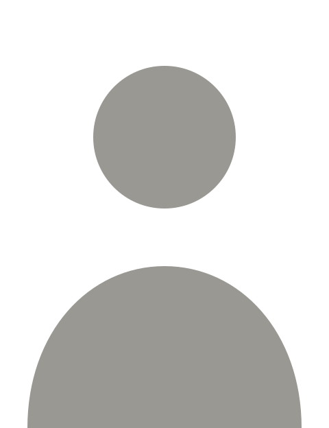

Transmissão · 3 noites
Entre no grupo e receba o link da transmissão antes de todo mundo.
Quero entrar no grupo
3 noitesao vivogrupo fechado
Transmissão · 3 noites
Entre no grupo e receba o link da transmissão antes de todo mundo.
Quero entrar no grupo